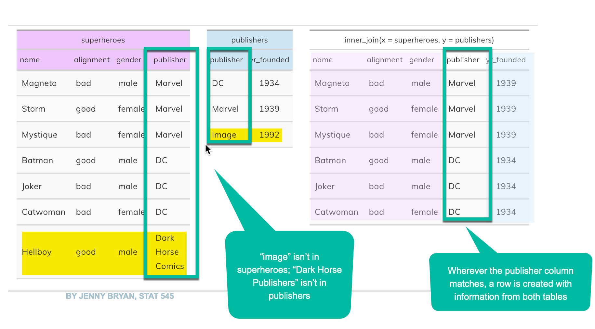

Be sure to update your packages in by pressing the Update button in the lower right panel under “Packages”. This version of joining was introduced in February 2023 – you’ll get errors if the packages are out of date.
18.1 Join basics and relational databases
Here is a great explainer on joins made by a previous MAIJ student, Andy Blye. Be sure to watch it:
joining in computer programming matches columns in one table to another, where the values within one or more columns match exactly. Here’s an example from Jenny Bryan’s Stat 545 course textbook:

superheroes
Relational databases
Most large data systems created since the 1980s are called “relational databases”, which means that each unit (person, ticket, vehicle) is stored in a different table1, and common columns link them together. They also routinely use codes or shorthand to store data, and provide another table to “look up” the details.
For example, your student ID is stored in one place in the university system with your name, address, email address, etc. When you sign up for courses, the database looks up that information to attach to your schedule. You only have to change it in one place, and it is automatically sent out through all of the interactions you have with the university.
Similarly, the course number, section and term is all that needs to be stored in the system for any semester. Those data points then populate the name of the course, the students registered for it, and holidays.
The system is created this way because it’s more efficient and reliable. Important information is stored only once, and can then be applied to millions of rows.
Examples of relational databases include:
Campaign finance systems, where donors are stored in one table and candidates in another, linked through a candidate or political action committee id.
Inspection records, such as those for restaurants, hospitals, housing code violations and workplace safety, which typically have at least three tables: The establishment (like a restaurant or a workplace), an inspection (an event on a date), and a violation (something that they found). Each table has its own ID, which is used whenever they are linked together.
A court docket data system, which usually has many types of rows: A master case table links to information on charges, defendants, lawyers, sentences and court hearings.
This is similar to, but stricter than, the tidy data principles of separating different kinds of information into separate data frames.
There are several kinds of joins, but the syntax is similar across them.
old_table |>
inner_join (new_table ,
join_by = (name of old_table column == name of new_table column) )
Tip
Try to piece together what this is saying, similar to the filter conditions: If the two columns are equal (double-equal signs), put them together.
Types of joins
An inner_join means that the value(s) in the common columns must match in BOTH tables – it will eliminate any row without a match
A left_join or right_join keeps everything from one table, and only the information that matches from the other. Those columns will contain NA wherever the match fails.
A full_join puts together both tables no matter whether there is any match. It’s pretty rare to use this.
18.3 Matchmaking with joins
Attaching characteristics to a dataset
You’ll often want to learn more about a geographic area’s demographics, voting habits or other characteristics, and match it to other data.
Sometimes it’s simple: Find the demographics (Census data frame) of counties that switched from Trump to Biden (voting results) as a way to isolate places you might want to visit.
Another example from voting might be to find the precinct that has the highest percentage of Latino citizens in the county, then match that precinct against the voter registration rolls to get a list of people you might want to interview on election day. In these instances, the join is used as a filter, but it comes from a different table. .
This is also common when you have data by zip code or some other geography, and you want to find clusters of interesting potential stories, such as PPP loans in minority neighborhoods.
Summarize data against another dataset
The previous examples all result in lists of potential story people or places. If you use join on summarized data, you can characterize a broad range of activity across new columns. Simplified, this is how you can write that more PPP money went to predominantly white neighborhoods than those that were majority Black.
“Enterprise” joins
Investigative reporters often use joins in ways unintended by the data creators. In the 1990s, they dubbed these “enterprise” joins, referring to the enterprising reporters who thought of them. In these instances, reporters combine datasets in ways that find needles in haystacks, such as:
School bus drivers who have had tickets for driving while intoxicated.
Day care center operators who are listed on the sex offender registry.
Donors to a governor who got contracts from the state
When you match these kinds of datasets, you will always have mistakes — some apparent matches are incorrect in the real world; some matches that should exist are ignored because of variations in names or other details. You always have to report out any suspected matches, so they are time consuming stories.
In the mid-2000s, when some politicians insisted that dead people were voting and proposed measures to restrict voting, almost every regional news organization sent reporters on futile hunts for the dead voters. They got lists of people on the voter rolls, then lists of people who had died through the Social Security Death Index or local death certificates. I never met anyone who found a single actual dead voter, but months of reporter-hours were spent tracking down each lead. Instead, they were people who had not yet been eliminated on the rolls but never voted. In others, they were people with the same names who had nothing to do with the dead person. In still others, they were the same people, but very much alive!
It’s very common for two people to have the same name in a city. In fact, it’s common to have two people at the same home with the same name – they’ve just left off “Jr.” and “Sr.” in the database. In this case, you’ll find matches that you shouldn’t. These are false positives, or Type I errors in statistics.
We rarely get dates of birth or Social Security Numbers in public records, so we have to join by name and sometimes location. If someone has moved, sometimes uses a nickname, or the government has recorded the spelling incorrectly, the join will fail – you’ll miss some of the possible matches. This is very common with company names, which can change with mergers and other changes in management, and can be listed in many different ways.
These are false negatives, or Type II errors in statistics.2
In different contexts, you’ll want to minimize different kinds of errors. For example, if you are looking for something extremely rare, and you want to examine every possible case – like a child sex offender working in a day care center – you might choose to make a “loose” match and get lots of false positives, which you can check. If you want to limit your reporting only to the most promising leads, you’ll be willing to live with missing some cases in order to be more sure of the joins you find.
You’ll see stories of this kind write around the lack of precision – they’ll often say, “we verified x cases of….” rather than pretend that they know of them all.
18.4 Using lookup tables: PPP industry codes
A lookup table is a list of unique items that translates codes to words. One example is the industry code in the PPP data. The data itself only has the NAICS code – a standard government scheme that categorizes every business into one of about a thousand possible industries. But you don’t know what those codes mean. You need an index, or lookup table, to tell you that.
We’ll use a table that contains the list of industries and match it to the PPP data. (The lookup table was derived from the concordance package in R, but is fully explained at the Census website.)
Once you load these data frames, be sure to explore them a little to make sure you understand what they contain.
The following code chunk loads both the original PPP data and the code table:
Notice that the industry code is 7 characters long, and has a detailed description. There are also “sector” and “subsector” codes, which use only the beginning of the code, and link to more general descriptions.
Attaching words to codes
In this example, we’ll take a small set of columns from the original table, and show how it links to the lookup table:
There are lots of risks in joining tables that you created yourself, or that were created outside a big relational database system. Keep an eye on the number of rows returned every time that you join – you should know what to expect.
Double counting with joins
We won’t go into this in depth, but just be aware it’s easy to double-count rows when you join. Here’s a made-up example, in which a zip code is in two counties.
Say you want to use some data on zip codes :
zip code
county
info
85232
Maricopa
some data
85232
Pinal
some more data
and match it to a list of restaurants in a zip code:
zip code
restaurant name
85232
My favorite restaurant
85232
My second-favorite restaurant
When you match these, you’ll get 4 rows:
zip code
county
info
restaurant name
85232
Maricopa
some data
My favorite restaurant
85232
Pinal
some more data
My favorite restaurant
85232
Maricopa
some data
My second-favorite restaurant
85232
Pinal
some more data
My second-favority restaurant
Now, every time you try to count restaurants, these two will be double-counted.
In computing, this is called a “many-to-many” relationship – there are many rows of zip codes and many rows of restaurants. In journalism, we call it spaghetti. It’s usually an unintended mess.
Losing rows with joins
The opposite can occur if you aren’t careful and there are items you want to keep that are missing in your reference table. If there were invalid NAICS codes in the original data, they would have been eliminated from the resulting joined table.
18.6 Congratulate yourself
Congratulations! This is the last key verb that you need to understand to address most stories. Your palette now has all of the primary colors!
18.7 Resources
The “Relational data” chapter in the R for Data Science textbook has details on exactly how a complex dataset might fit together.
I remember them by thinking of the boy who cried wolf. When the village came running and there was no wolf, it was a Type I error, or false positive ; when the village ignored the boy and there was a wolf, it was a Type II error, or false negative.↩︎